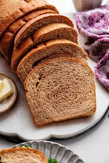
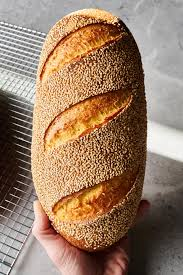

Bread Hub
Placeholder content. Replace everything here with your actual content.

Sourdough is a type of bread that
uses a fermented starter instead of commercial yeast for leavening.
This starter is a mixture of flour and water that contains naturally
occurring wild yeast and lactic acid bacteria. Click the underlined
name above to learn more
A baguette is a long, thin loaf of
French bread characterized by its crisp crust and soft, airy
interior. It's typically made with flour, water, yeast, and salt.
Baguettes are a staple in French cuisine and are enjoyed in various
ways throughout the day.
Rye bread is a type of bread made
with flour from the rye grain, and it's known for its dense texture,
strong flavor, and ability to stay fresh longer than wheat bread.
Its flavor can range from earthy and nutty to slightly tangy,
depending on the type of rye flour used and any added ingredients
like caraway seeds.

Wheat bread is a type of bread made
with flour that includes some or all parts of the wheat kernel: the
bran, germ, and endosperm.
Potato bread is a type of bread where
a portion of the wheat flour is replaced with mashed potatoes,
potato flour, or dehydrated potato flakes. It often results in a
bread that is softer, slightly sweeter, and has a more moist texture
compared to regular bread.

Garlic bread is a type of bread,
often made with baguette or Italian loaf, that is toasted or baked
with a topping of garlic, butter, and often herbs like parsley.
White bread is a type of bread that
is typically light in color and soft in texture. It's often made
from refined wheat flour, meaning the bran and germ have been
removed during processing. This results in a lighter-colored flour
and a finer, less chewy crumb. White bread is a versatile staple,
commonly used for sandwiches, toast, and other baked goods.
Whole grain bread is bread made with
flour from grains that include all parts of the kernel – the bran,
germ, and endosperm. This contrasts with white bread, which
typically has the bran and germ removed. Whole grain bread is
considered more nutritious due to the presence of fiber, vitamins,
and minerals found in the bran and germ. It can be made from various
grains, including wheat, oats, or other whole grains.
A bun is a small, usually round or
oval, bread roll, often made from wheat flour and baked until golden
brown. Buns can be sweet or savory and are commonly used as
hamburger or hot dog buns.
Veda bread is a type of malt loaf
traditionally produced in the United Kingdom and Ireland, currently
primarily made in Northern Ireland, it's a small loaf with a caramel
color and a dark, rich appearance, especially when made with
molasses.
Cinnamon bread is a sweet, soft, and
fragrant bread characterized by a swirl of cinnamon and sugar within
its dough, often with a cinnamon sugar topping.
French bread refers to a variety of
long, narrow, crusty loaves made with a basic dough of flour, water,
yeast, and salt. It's known for its crisp crust and soft interior,
and comes in different shapes like baguettes, batards, and boules.
Honey bread is a type of bread that
is sweetened with honey, offering a subtle sweetness and often a
slightly richer flavor than plain bread.

Purple bread is typically made by
incorporating purple-fleshed sweet potatoes or ube (purple yam) into
the dough, which gives it a vibrant purple color and a slightly
sweet, nutty flavor

Sesame bread is a type of bread that
incorporates sesame seeds, either sprinkled on top of the crust
before baking, mixed into the dough, or both.

Banana bread is a sweet, moist quick
bread or cake made with mashed bananas as a primary ingredient. It
often features a soft, tender crumb and a sweet, banana-forward
flavor, sometimes with hints of brown sugar and cinnamon.
Raisin bread is a type of sweet bread
characterized by the inclusion of raisins and often flavored with
cinnamon. It's typically made with a white or egg dough base, but
can also incorporate other flours like all-purpose, oat, or whole
wheat. The texture can range from chewy and dense to soft and moist,
depending on the recipe.
Cornbread is a quick bread made with
cornmeal, a type of flour made from ground dried corn. It's a
popular dish, especially in the Southern United States, and has
origins in Native American cuisine. Cornbread can be made in various
ways, but it typically includes cornmeal, flour, milk or buttermilk,
eggs, and a leavening agent like baking powder.